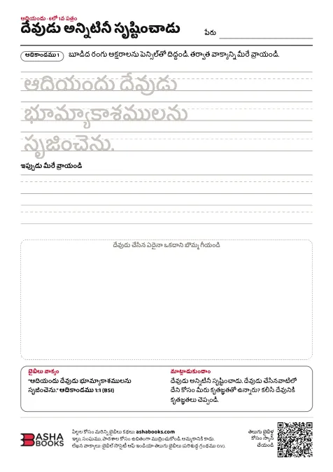

ఉచితంగా ముద్రించుకోండి
పిల్లల కోసం బైబిలు కార్యపత్రాలు.
రంగుల బొమ్మలు, పదాల ఆటలు, చిక్కుదారులు, దిద్దే పత్రాలు: ఇంట్లో మీ పిల్లల కోసం లేదా మీ సండే స్కూల్ తరగతి కోసం ముద్రించుకోవడానికి సిద్ధంగా ఉన్నాయి.
- A4, నలుపు తెలుపు
- ప్రతి పత్రంలో ఒక బైబిలు వాక్యం
- ఇల్లు, సంఘము, పాఠశాలకు ఉచితం
సంపుటి 1 · ఆదికాండము
ఆదియందు: సృష్టి నుండి యోసేపు వరకు
ఆదికాండములోని కథను అనుసరించే ఆరు పత్రాలు: దేవుడు లోకాన్ని సృష్టించడం నుండి యోసేపు తన అన్నలను క్షమించడం వరకు. ప్రతి పత్రంలో ఒక బైబిలు వాక్యం, కలిసి మాట్లాడుకోవడానికి ఒక ప్రశ్న ఉన్నాయి.
PDF · 1503 KB · జవాబులు 1396 KB
సంపుటి 2 · సువార్తలు
యేసును తెలుసుకుందాం: సువార్తలలోని కథలు
యేసును గురించిన ఆరు పత్రాలు: ఆయన పిలిచిన స్నేహితులు, ఆయన చేసిన అద్భుతాలు, ఆయన చెప్పిన కథలు, ఆయనను కలిసిన మనుషులు, మొదటి ఈస్టర్.
PDF · 1547 KB · జవాబులు 1437 KB
సంపుటి 3 · బైబిలు వాక్యాలు
దేవుని వాక్యానికి రంగులు: బైబిలు వాక్యాల రంగుల బొమ్మలు
ఆరు రంగుల బొమ్మలు: ప్రతి దానిలో పెద్ద అక్షరాలలో ఒక చిన్న బైబిలు వాక్యం, రంగు వేయడానికి ఒక బొమ్మ ఉన్నాయి. చిన్న పిల్లల కోసం, క్రిస్మస్, ఈస్టర్ బొమ్మలతో.
PDF · 1737 KB
తెలుగు బైబిళ్లు
మీ కుటుంబం కోసం ఒక తెలుగు బైబిలు
తెలుగు బైబిళ్లు, తెలుగు–ఇంగ్లీషు బైబిళ్లు. భారతదేశమంతటా పంపిణీ.


తల్లిదండ్రులకు, ఉపాధ్యాయులకు
ఈ పత్రాలను ఎలా ఉపయోగించాలి
- 1A4 కాగితంపై ముద్రించండిప్రతి పత్రం ఒక A4 పేజీపై నలుపు తెలుపులో ముద్రించబడుతుంది. మీ ప్రింటర్ Letter సైజులో ఉంటే "fit to page" ఎంచుకోండి.
- 2ముందు కథ చదవండిప్రతి పత్రంలో బైబిలు భాగం పేరు ఉంటుంది. కార్యం చేసే ముందు దాన్ని కలిసి చదవండి. తర్వాత పత్రం క్రింద ఉన్న వాక్యం, ప్రశ్నతో దాని గురించి మాట్లాడుకోండి.
- 3జవాబులు సరిచూడండిపదాల వెదకడం, చిక్కుదారి, పదవినోదం, జతపరచడం, కథ వరుసలకు జవాబులు ప్రతి సంపుటి జవాబుల పత్రంలో ఉన్నాయి.
- 4అందరితో పంచుకోండిమీ కుటుంబం, సంఘము, పాఠశాల కోసం ఎన్ని ప్రతులైనా ముద్రించుకోండి. దయచేసి వీటిని అమ్మకండి.